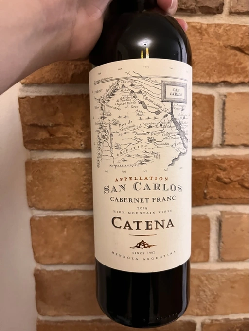

- Type
- Red Still, Dry
- Producer
- Bodega Catena Zapata
- Vintage
- 2019
- Location
- Argentina, San Carlos
- Grapes
- Cabernet Franc
- Alcohol
- 13.5
- Sugar
- NA
- Price
- 493 UAH, 519 UAH
- Cellar
- N/A
Producer
Famous producer from Argentina. They say that Catena family has resurrected Malbec.
Ratings
2022-09-17 - 7.50
Jam made of dark plum, dark cherry, raspberry, and blueberry. Add some eucalyptus, medicinal herbs and sweet tobacco. Not complicated, yet charming. Soft, medium+ body, medium acidity. It’s like drinking cough syrup with some alcohol in it. All thanks to viscosity, relative sweetness and flavours of jam and liquorice. And it’s tasty.